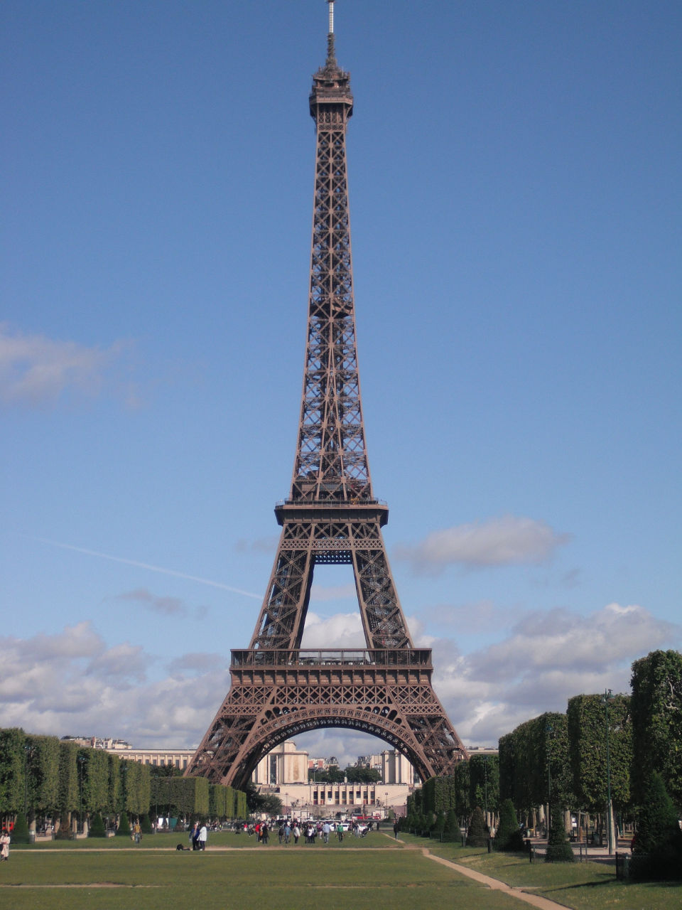
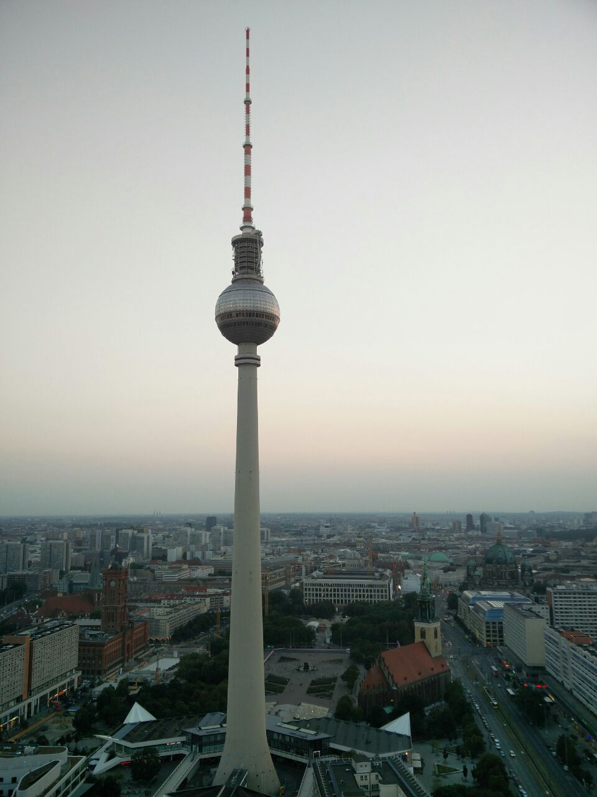

Maker Party - Reforma autorského práva v EU
Michal Stanke
<mstanke@mozilla.cz>
,
@MozillaCZ
,
#makerparty
,
#fixcopyright
,
OpenAlt 2016, Brno
Autorské právo v EU
Co se vlastně děje
stará směrnice EU
nejednotné zákony v členských zemích
špatná informovanost
changecopyright.org
Problémy, které přináší
dlouhá ochrana
problém s internetem a službami
internetová kultura
svoboda vyjadřování
výjimky z autorského práva (
copyrightexceptions.eu
)
jedeme na dovolenou
Kvíz 1

Crissy Casey, Public domain
Kvíz 2
Jay Buangan, Creative Commons
Kvíz 3

Kalman Szalai
Co teď?
Navrhovaná reforma
jak funguje proces v EU
text a data mining (TDM) pro
vědecký
výzkum
výjimky ne
ochrana literárních děl 20 let!
Je to řešení?
changecopyright.org
postcrimes.org
A teď si uděláme meme!
A teď si uděláme meme!
imgflip.com/memegenerator
nebo
bit.ly/2eVNJvK
Obrázky:
commons.wikimedia.org
search.creativecommons.org
flickr.com/commons
photopin.com
#makerparty
#fixcopyright
Přispějte do commons
Děkuji
Michal Stanke
@MozillaCZ
#makerparty
,
#fixcopyright
changecopyright.org
fixcopyright.eu
Prezentace
:
bit.ly/2eeNRCw